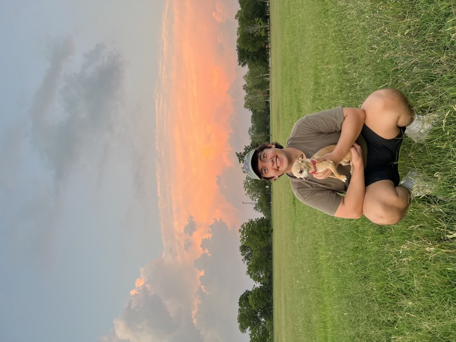

The work you do by hand, made to run on its own.
Well-built automation for operations-heavy businesses that have outgrown the way they work. The deliverable is working software, running inside your business, not a set of recommendations.
How it works
Scoped in phases, built on proven parts
It starts with a conversation about how your business actually runs, where the work slows down, and which of it is genuinely worth automating. The build is then scoped in phases, each with its own estimate and a cap on hours, so the cost is approved before any work starts. Most first systems go live within four to six weeks. Larger operations run longer, and you hear that at the scope, not after.
-
Call
A short conversation about the work, at no cost.
~45 min -
Scope
A close look at how the work is done today, and an agreement on what is worth automating.
~1 week -
Build
Proven components where they fit, purpose-built ones where they do not.
1 to 3 weeks -
Test
A run on real data, with the people who will use it, against the cases that actually break things.
~1 week -
Ship
The system goes live, and stays maintained and running.
Ongoing
If it happens more than once and follows a pattern, it can probably be automated. That is the starting point.
Start a conversationCase study
What this looks like in practice
Everything below is running in production today. These are working systems the business depends on daily, not prototypes and not a recommendation deck.
Contract work that ran by hand, now runs on its own.
Onboarding, contracts, change orders, and filing were each handled by hand. A single contact list and a single project list now feed all of them, so documents build themselves, route for signature, and file to the right folder without anyone chasing them.
- Sector
- Commercial construction
- Scope
- Onboarding → contract → filing
- Time recovered
- ~15 to 17 hrs / month
The stack
Built on tools you already own
The systems are built on the workspace, document, and accounting tools your business already pays for. That keeps them familiar to your team, and it keeps them working whether or not JMG Systems is still involved.
- n8n
- Supabase
- Google Drive
- Google Sheets
- Gmail
- DocuSeal
- QuickBooks
- Netlify
If a tool can share its data, it can be part of the system.
About
An operations practice based in Austin

JMG Systems works with owners and operators who are still carrying the operations of the business themselves, and who are feeling the weight of it.
The practice was founded by Juan M. González, whose background is in project coordination and operations. Over four years at a B2B agency he managed more than 3,000 projects and 2,400 client meetings, led an account team, and built multi-stage automation programs inside Salesforce. Most of that work came down to turning complicated requirements into systems that people could actually run day to day, and the same thinking goes into every build here.
The goal is always the same: less administrative weight, and more room to do the work that actually matters.
- 3,000+
- Projects managed
- 2,400+
- Client meetings
- 5+ yrs
- Operations and automation
Contact
Start here
If you are running the operations yourself and feeling the weight of it, let’s talk. Send a note about what is taking the most time, and you will get an honest answer on whether it is worth automating.